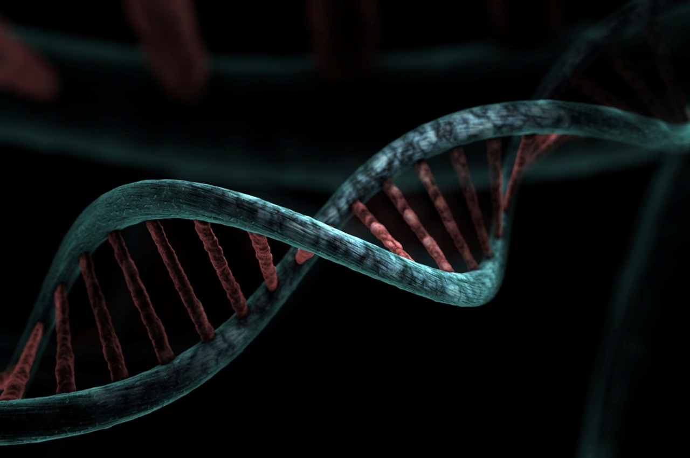

03
基因醫學中心
Center of Genomic Medicine
從第一個細胞開始，把『早一步知道』變成『早一步守護』。

11
03
讓基因科技走進日常
新生兒聽損基因・染色體微陣列・產前精準檢測
Genomic Medicine for Everyday Families
現代產前與新生兒照護已從「發現異常後處理」轉向「早一步辨識風險」。婦幼院區基因醫學中心整合產前、新生兒與兒童期遺傳檢測，與本院遺傳實驗室、婦產科、小兒科、耳鼻喉科共同協作。
我們把過去專屬醫學中心的高階基因檢測，帶到家庭可以負擔、可以理解的層次──不只是檢驗，更是諮詢、解讀與後續支持。
Genomic medicine for everyday families — not just tests, but counseling, interpretation, and continued support.
🧬
新生兒常見聽損基因篩檢
於新生兒期主動篩出常見聽損基因，把握早療黃金期
🧬
染色體微陣列分析（CMA）
高解析度檢測微小染色體變異，補強傳統染色體檢驗的盲點
🧬
產前精準檢測 LDTs
依家族病史與臨床需求量身規劃，整合產前染色體與基因變異檢測
🧬
完整遺傳諮詢
由臨床遺傳科醫師與諮詢師陪伴解讀，協助家庭做出資訊充足的決定
「解開一個密碼，是為了讓孩子用自己的方式長大。」
12